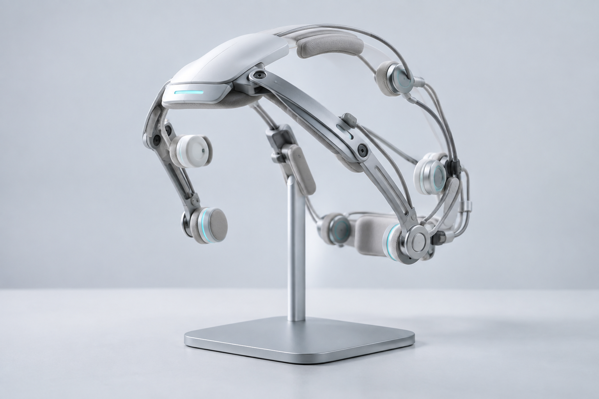

状態検知
装着状態、頭部の向き、姿勢変化、身体負荷を継続的に確認し、支援を行える状態か判定します。
ASSISTANCE HARDWARE
Behavior Assistance Systemの状態検知と支援出力を統合し、利用者ごとに調整された行動支援を安定して運用するための専用機材です。

CONTROL INTERFACE
頭部周辺に配置した複数のセンサーが、装着状態、姿勢変化、利用者の負荷を継続的に確認します。Behavior Assistance Platformから受け取った運用条件と組み合わせ、BASの案内、動作タイミング、安全停止を利用環境に合わせて調整します。
軽量フレームと非侵襲型の接触パッドを採用し、装着者ごとの頭部形状に合わせて技術担当者が初期調整を行います。
SYSTEM COMPONENTS
装着状態、頭部の向き、姿勢変化、身体負荷を継続的に確認し、支援を行える状態か判定します。
登録された予定、エリア、経路に合わせて、案内の提示と動作支援の強度・タイミングを調整します。
通信状態にかかわらず危険を検知できる独立制御を備え、必要な場合は支援を休止して安全確認へ移行します。
OPERATION SPECIFICATION
本機材は単体では提供されず、Behavior Assistance Platformおよび法人向けBAS運用環境と組み合わせて使用します。
| 提供形態 | 法人契約に基づく貸与。一般販売は行っていません。 |
|---|---|
| 初期設定 | 認定技術担当者が装着調整、センサー校正、利用環境との接続確認を実施します。 |
| 利用前確認 | 装着状態、通信、安全基準、本人承認を確認した後にセッションを開始します。 |
| 保守 | 利用回数に応じた定期点検と、センサー部・接触パッドの交換を実施します。 |
SAFE OPERATION
装置は、本人が確認したセッション条件と法人側の安全基準が一致した場合にのみ有効化されます。異常な負荷、装着ずれ、通信断、登録範囲外への移動を検知した場合は、安全を優先して支援内容を調整または停止します。